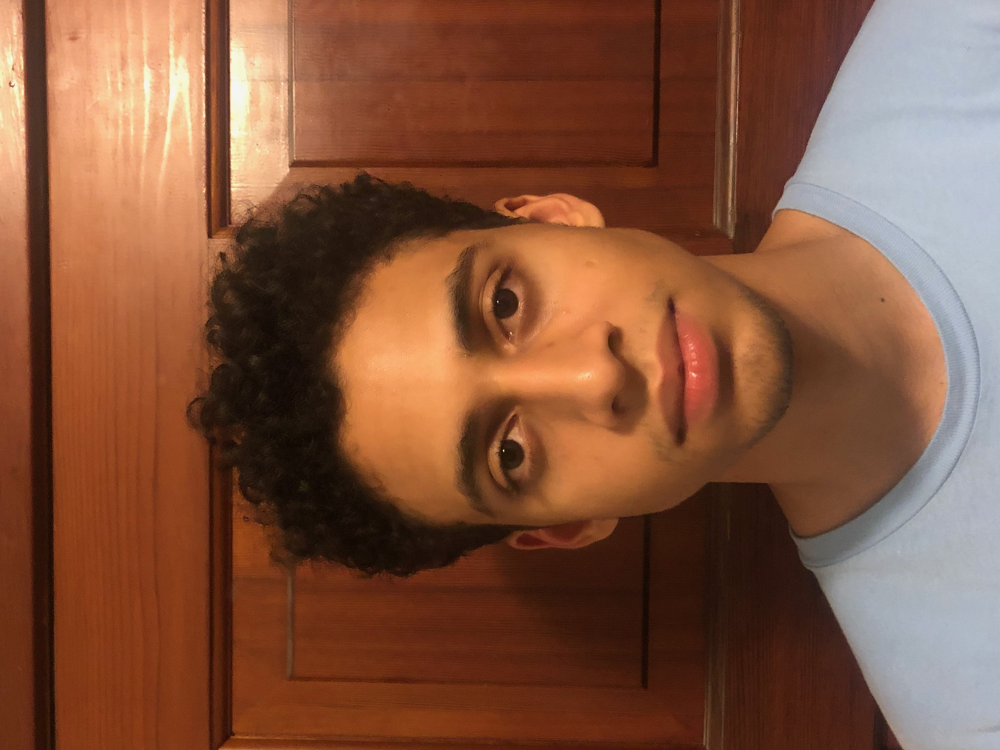
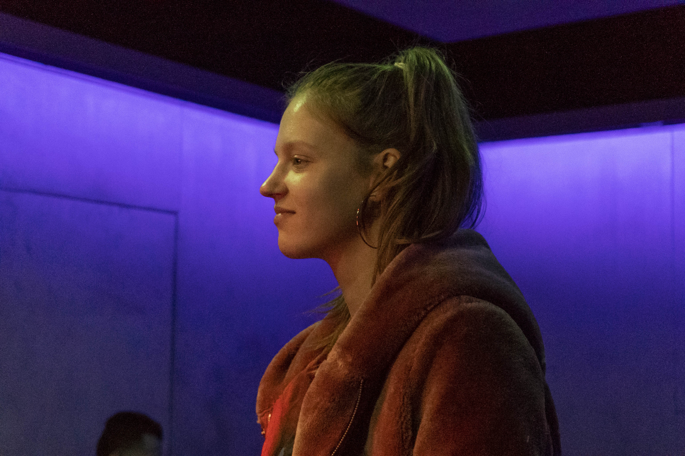

Hello! My name is Nathan Jennex and I'm a first year student here at Fanshawe. I moved to London from Toronto and the change has taken a little getting used to. The same goes for my courses, only having three hours a week of each is a challenge as I have so many questions. So far I have found this class EXTREMELY challenging, but I am determined to get coding down. I plan to take the skills I have learned in this program and start my own business venture! Before you ask, no, I don’t know exactly what a “business venture” entails, but I know that I would like to take a shot at some sort of independent/freelance work where I get to make the decisions. As far as my personal life, I really enjoy competition and spend most of my free time playing sports or video games. Soccer is my favourite sport, though I play almost all of the major ones. I prefer games where your constantly supporting and being helped by your teammates, I don’t play many solo games. Similarly, my favourite video game is Overwatch, a 6v6 team based fps where cooperation is key. Though the course seems intimidating, I feel my practice working in groups will prove invaluable and I will flourish once I get the basics down.
Natasha Adler was born in Town of the Blue Mountain. At the age of 6 she moved to Kincardine and at 14 London. She has always been an active child, participating in sports, music, and academics. Growing up she played Competitive Soccer, Competitive Dancing, Karate, Track and Field and Basketball. She has been taking vocal lessons since she was 6 years old, has 2 Albums out and is working on the third with her boyfriend mixedbyoso. Natasha loves to travel. She has visited England, the Netherlands, Italy, France, South Africa, Colombia, Panama, Costa Rica, Cuba and various parts of the states. She would one day like to move to South America. In her pass time Natasha likes to go to the beach, sing, go to the gym, ski, rock climb and draw. For Christmas this last year Natasha bought herself a whole new ski set. Some of Natasha’s favorite foods consist of anything Italian, anything made from fresh garden veggies and ice cream. Natasha lived in Jasper, Alberta for the summer months, working and saving up for school. Here she got to hike, see bears, and the amazing views the Canadian Rockies have to offer. Natasha is currently enrolled at Fanshawe College where she is taking the Interactive Media Design Program. She hopes after graduating that she can move and work in South America as a Designer either at a Firm or out of home. She is currently learning Spanish to help ease the transition in a few years.
